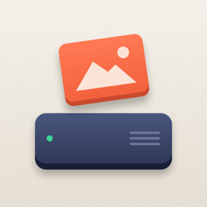

Offloadly
Contact
Questions, problems or ideas? Email atishpaul01@gmail.com. Please include your iPhone model, iOS version and the drive you use. I usually reply within two working days.
Offloadly is made by Atish Paul.
Frequently asked questions
My drive doesn't appear
Connect the drive, open the Files app and check it appears under Locations. If it doesn't, the drive may need more power (use a powered hub or the Lightning to USB 3 Camera Adapter connected to a charger) or a supported format (ExFAT or APFS). Then tap Select Drive in Offloadly and choose it.
Which format should my drive use?
ExFAT works with iPhone, Mac and Windows and stores files of any size. Avoid FAT32 — it can't store files of 4 GB or more, such as long videos. To protect the drive with a password, choose APFS (Encrypted). You can format in Files: long-press the drive → Erase.
Will Offloadly copy the same photo twice?
No. Offloadly recognises files already on your drive — even renamed or in other folders — by their content fingerprint (SHA-256), and skips them. Running a backup again only copies what's new.
Is my data uploaded anywhere?
No. Backups never use the internet. Files go only from your iPhone to the drive you choose. See the Privacy Policy.
How does Free Up iPhone Storage work?
Offloadly lists photos and videos that are completely on your drive — original, Live Photo video, RAW and edits — and re-checks each file on the drive. When you confirm, they move to Recently Deleted in Photos for 30 days. If you use iCloud Photos, removing them also removes them from iCloud and your other devices.
Copying stopped when I locked my iPhone
On iOS 26 and later copying continues with the screen locked and shows progress on the Lock Screen. On earlier versions iOS limits background time, so Offloadly pauses safely and continues when you open it again — nothing is copied twice and no half-written files are left.
Can I open my backup on a computer?
Yes. Everything is plain files in Offloadly/Photos/Year/Month, readable on any Mac or PC without Offloadly. A report of each backup with every file's fingerprint is in Offloadly/Reports.
How do I restore photos to my iPhone?
Drive tab → Photos & Videos → Select → Restore to iPhone. Live Photos are rebuilt from their photo and video, and items still on your iPhone are skipped.